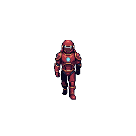
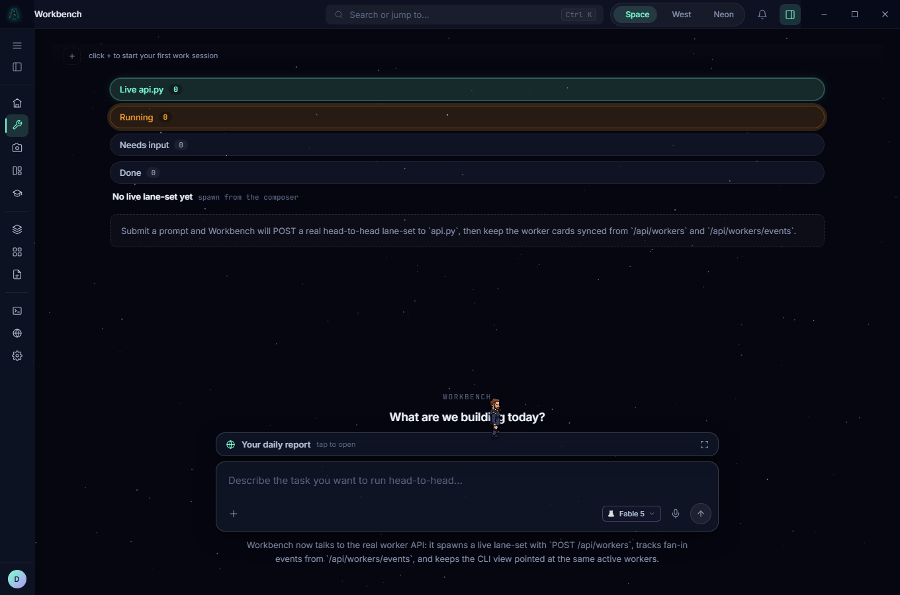
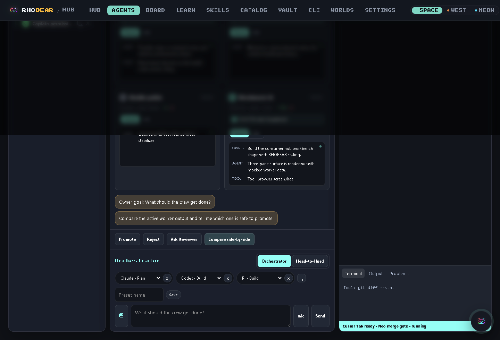

One goal. Many agents. One reviewer.
A chat is one model, alone in a box. The workbench is a team of named workers running side by side — each in its own lane, with its own session, its own diff, its own gate. You watch all of them at once, promote the one that's right, and reject the rest. In real time, on your machine.

Most agent products give you a chat. We gave you a workbench.
A chat is one model, one channel, no memory of the last run. The workbench is a team of named workers in parallel lanes — each with its own session, its own diff, its own gate. You see all of them at once. You promote what's right. You reject what isn't. You stay in charge of every change before it lands.

See the work happen — instead of trusting a black box.
Todos, the live diff, and the terminal are all on screen while the worker runs. You don't approve a summary of what an agent claims it did — you watch it do it, then decide.
- LEFT — live agent list, grouped Recent / Head-to-Head / In Compose / Older
- MIDDLE — the active worker: todos, transcript, diff, owner-goal input
- RIGHT — live code viewer with Terminal / Output / Problems tabs
- ACTIONS — Promote · Reject · Ask Reviewer · Compare side-by-side
- Grab a model card from the tray, drop it on an open lane — no wiring step.
- The dotted handoff line draws itself to the Board.
- Tooltip lights up: PR in flight, last commit, owner-pending count.
Run three models at the same task. Keep the winner. Throw away the rest.
Point Claude, Codex, and Pi at one goal in parallel lanes. They each take a swing. You compare the diffs side by side and promote the one that's actually right — no single model gets the last word.
One goal, three independent attempts.
MODE TOGGLE — Orchestrator vs Head-to-Head · per-lane MODEL PICKER (Claude · Plan / Codex · Build / Pi · Build)
Compare the results, not the promises.
Compare side-by-side · diff vs diff · file counts and +/− lines per lane
Promote one. The losers are discarded.
Promote · Reject · Ask Reviewer — nothing merges without your call

Catch the bad change before it lands — not after.
Every worker's output stops at a merge gate. The Reviewer reads the evidence pack, checks the changed files, and tells you whether it's safe to promote. Nothing reaches your branch until you say so.
Reviewer pass · evidence pack + changed-file check · owner-confirm to merge · Conditional / strict modes
Coming: your team, plus theirs.
Today the workbench runs one crew, on one machine — and that's the whole page above. Next, your crew will work alongside another machine's crew: two teams, one coordinated job, passing work across the handoff bus.
It's the shift the whole industry is racing toward — AI that works as a team, not a single chat in a window. And it's headed to two desktops for about the price of a dinner out.
It runs on your box. We take no data.
There's no telemetry pipe home, because there's nowhere for it to go. Your agents and your conversations run where you run them — and the parts that aren't built yet are labelled as such, on purpose.
Live todayAgents and conversations run on your machine or your server. Nothing is routed through us. Nothing is stored by us.
Internal commands between workers are cryptographically signed (Ed25519). A forged instruction is rejected, not executed.
Plugins are denied by default. Each agent gets only the tools its job needs — Rule-of-Two — behind owner-token auth.
The workbench binds to localhost. It isn't open to the network unless you choose to open it.
The cross-machine secure link.
When two machines team up, they'll pair the way you pair a phone: a pairing code, a short verify phrase you both read aloud, and per-device keys. The link is end-to-end encrypted, and either side can revoke it instantly. This is roadmap — not in v1.
Prefer the CLI? It's the same crew, all in plain text.
A four-pane CLI wall: Claude Code, Pi, a shell, a log tail. Add panels. Watch the bus fire. Pipe events anywhere. Same workers, same handoff bus, no mouse required.

Subscribe to the live event bus from any panel — every worker speaks here.
Spawn a fifth panel for any tool: ollama, jq, htop, your own script.
Real router / scrubber / dispatch traffic, mocked or live, in one panel.